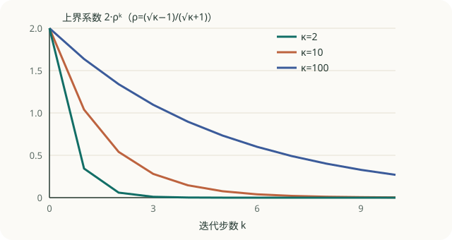

5.1.4 共轭梯度法的收敛速度：条件数与特征值
在能量范数下，CG 的误差被 2·((√κ−1)/(√κ+1))^k 控制，κ 是 Q 的谱条件数；若 Q 只有 N 个不同特征值，精确算术下至多 N 步终止。收敛速度取决于谱的分布，而不只是问题规模。
用什么度量误差
讨论 CG 的收敛速度时，合适的误差尺度不是欧氏距离，而是能量范数 ‖e‖_Q=√(eᵀQe)。它把不同方向的曲率纳入考虑：在曲率大的方向，同样的坐标偏差对应更大的能量误差。
由梯度关系 g_k=Q(x_k−x*)=−Qe_k，能量范数误差恰好等于梯度的 Q⁻¹ 范数：‖e_k‖_Q²=g_kᵀQ⁻¹g_k。因此下降 ‖g_k‖ 与下降能量误差是等价的，这是把停止准则建立在梯度范数上的依据。
条件数给出的收敛界
定理 5.3（Nocedal & Wright）。设 Q 对称正定，κ=λ_max/λ_min 是其谱条件数。则共轭梯度的能量范数误差满足下面的界，其中 ρ=(√κ−1)/(√κ+1)＜1。
这个界说明：条件数越接近 1，收缩因子 ρ 越小，收敛越快；当 κ=1（Q 是单位阵的倍数）时 ρ=0，一次迭代即精确终止。

从 κ 看收敛速度
把收缩因子 ρ=(√κ−1)/(√κ+1) 作为 κ 的函数，可以直观看到它的行为：κ=1 时 ρ=0；κ=2 时 ρ≈0.172；κ=10 时 ρ≈0.519；κ=100 时 ρ≈0.818，已经接近 1，收缩变得很慢。当 κ→∞ 时 ρ→1，界退化为无信息。
这提醒我们：CG 对于良态问题很快，但一个谱很宽的问题仍然可能需要很多步。改进的思路不是改变 CG，而是改变谱——这就是预条件（5.1.5）的动机。
收缩因子 ρ 随条件数单调上升。横轴是幂律刻度的 κ，纵轴是 ρ；κ=2、10、100 处分别约为 0.172、0.519、0.818。谱越宽，界预测的收缩越慢。
特征值聚集与有限终止
定理 5.4（Nocedal & Wright）。若 Q 只有 N 个不同的特征值，则精确算术下 CG 至多 N 步终止。原因是误差多项式可以在这些特征值处为零，从而一次清除对应分量。
这是一个比“迭代 n 步”更强的结论。它解释了为什么特征值聚集的问题收敛很快：几个相距很远的边缘特征值会在早期迭代中被“扣除”，剩下紧密聚集的特征值等价于一个更小的有效条件数。预条件的思路正是把谱往一起压。
多项式观点
从 Krylov 性质可以推出：第 k 步误差可以写成 e_k=p_k(Q)e_0，其中 p_k 是次数不超过 k、且 p_k(0)=1 的多项式。于是在谱区间上取最小最大（Chebyshev）即可得上界，定理 5.3 正是取区间 [λ_min,λ_max] 的最小最大多项式得到。
这个观点把收敛速度归结为“能否找到一个在 [λ_min,λ_max] 上除 0 点外都小的多项式”，直接从谱的分布而不是矩阵规模读出速度。
数值验证与边界
取 Q=[[3,1],[1,3]]，特征值为 2 与 4，所以 κ=2，ρ≈0.1716。定理 5.3 给出 ‖e₁‖_Q≤0.343‖e₀‖_Q、‖e₂‖_Q≤0.0589‖e₀‖_Q。但这个二维例子实际上在第 2 步精确终止，误差为零：因为 Q 只有 2 个不同特征值，定理 5.4 给出的是 N=2 的有限终止，比 κ-界更紧。这说明 κ-界是保守的。
边界：这两个定理都在精确算术下成立。浮点环境下，谱聚集带来的有限终止会被舍入误差破坏，κ-界也可能不再严格成立；实际算法依靠重启与预条件。本页程序用双精度在一系列条件数上对比实际能量范数误差与定理 5.3 的上界，用来观察界的保守程度，而不是声称某个收敛速度。
交互：条件数与实际误差
选择一个条件数 κ，程序构造一个对角正定矩阵（特征值在 [1,κ] 上均匀分布，规模 n=20），运行 5 步 CG，输出实际能量范数误差与定理 5.3 的上界。
实时模型计算
Python：实际误差与上界的对比
程序只依赖标准库。它在一个特征值均匀分布于 [1,κ]、规模 n=20 的对角正定问题上跑 5 步 CG，断言实际能量范数误差不超过定理 5.3 的上界，且确实下降。
"""Compare CG energy-norm error with the kappa bound (Theorem 5.3)."""
from math import sqrt
def diag_problem(kappa, n=20):
lam = [1.0 + (kappa - 1.0)*i/(n - 1) for i in range(n)]
return lam, list(lam) # x* = ones, so b = Q x* = eigenvalues
def energy_error(lam, x):
return sqrt(sum(lam[i]*(x[i] - 1.0)**2 for i in range(len(lam))))
def run(lam, b, steps):
n = len(lam)
x = [0.0]*n
g = [-b[i] for i in range(n)]
p = [-g[i] for i in range(n)]
gn = sum(v*v for v in g)
hist = [energy_error(lam, x)]
for _ in range(steps):
if sqrt(gn) <= 1e-14:
break
Qp = [lam[i]*p[i] for i in range(n)]
alpha = gn / sum(p[i]*Qp[i] for i in range(n))
x = [x[i] + alpha*p[i] for i in range(n)]
g = [g[i] + alpha*Qp[i] for i in range(n)]
gn_new = sum(v*v for v in g)
beta = gn_new / gn
p = [-g[i] + beta*p[i] for i in range(n)]
gn = gn_new
hist.append(energy_error(lam, x))
return hist
if __name__ == "__main__":
lam, b = diag_problem(10)
hist = run(lam, b, 5)
rho = (sqrt(10) - 1)/(sqrt(10) + 1)
bound = 2*rho**5*hist[0]
assert hist[-1] <= bound
assert hist[-1] < hist[0]
print("rho =", round(rho, 4), "| bound =", round(bound, 6), "| actual =", round(hist[-1], 6))